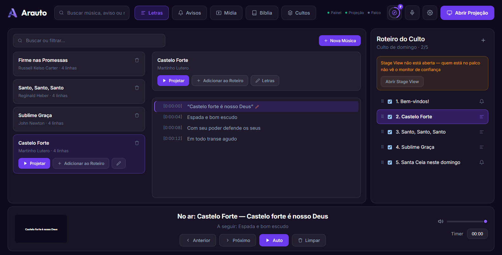
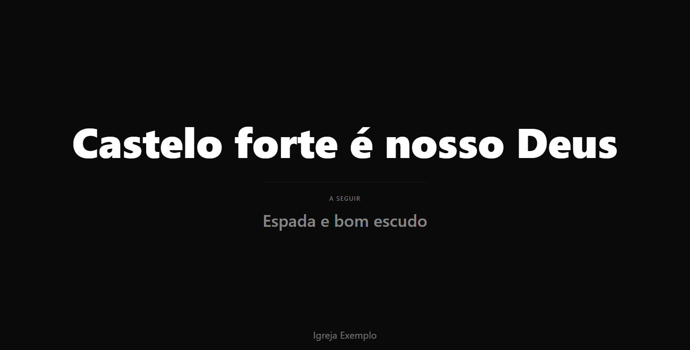
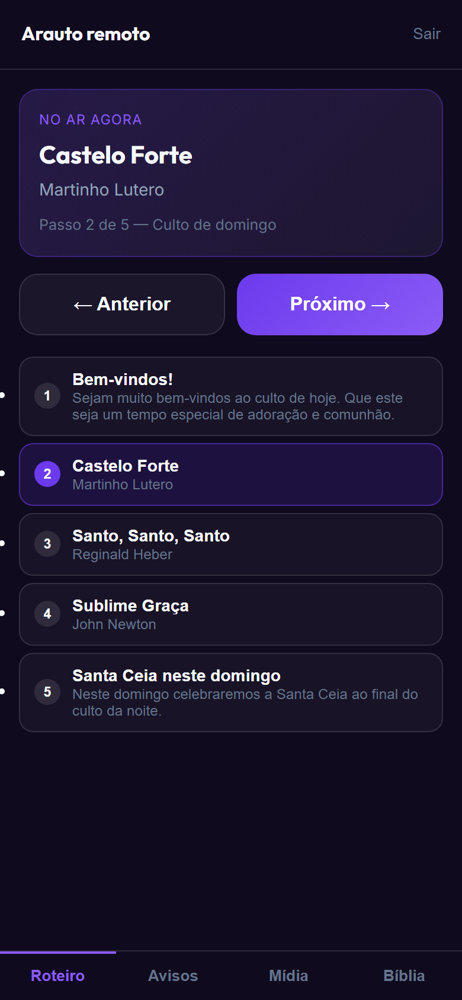

O sistema de projeção que a sua igreja pode ter, sem pagar nada por isso.
Letras de música, avisos, versículos, mídia e roteiro de culto — tudo num painel simples, feito pra quem opera de voluntário, num computador comum, sem depender de internet.
Windows · instalação em 2 minutos · sem cartão de crédito, sem cadastro

Três passos, e o culto de domingo está pronto
Sem servidor, sem conta na nuvem, sem configuração de rede complicada.
-
1
Instale no computador da igreja
Um instalador do Windows, dois minutos. Na primeira vez você cria a conta local de administração — e pronto, nada mais.
-
2
Cadastre o conteúdo durante a semana
Músicas com letra, avisos, mídia e versículos. Depois monte o roteiro do culto na ordem que ele vai acontecer.
-
3
No domingo, é só apresentar
Abra a Projeção no computador do telão e clique em "Apresentar". O resto é avançar com a seta do teclado — ou pelo celular.
Tudo que uma igreja pequena precisa pra projetar o culto
Sem módulos pagos escondidos, sem limite de uso.
Letras de música
Importa legenda direto do YouTube, ou cole/edite manualmente — com avanço automático no ritmo da música.
Bíblia embutida
Busque um versículo digitando "jo 3:16" e projete na hora. Aceita importar outras traduções.
Avisos com modelo
Crie avisos com imagem ou vídeo, e reaproveite modelos com variáveis pra não redigitar toda semana.
Roteiro de culto
Monte a ordem do culto com antecedência e apresente com um clique — avance com o teclado, sem clicar em nada.
Mídia e fundos animados
Vídeos, imagens, trilhas — enviadas ou do YouTube — mais fundos animados prontos pra tela de projeção.
Monitor de palco
Uma tela própria pra quem está no palco acompanhar a letra e o próximo passo, sem depender do telão.
Controle remoto pelo celular
Pareie um celular com um código e avance o roteiro, mostre um aviso ou projete um versículo sem estar no computador.
Guia de primeiros passos
Um roteiro dentro do próprio painel — e um manual com tutoriais visuais de cada função — pra não descobrir nada ao vivo, no meio do culto.
Cada pessoa vê exatamente o que precisa
O mesmo culto, em três telas diferentes ao mesmo tempo — e no celular de quem conduz.


Por que o Arauto é gratuito?
Porque foi criado pra servir igrejas, não pra vender assinatura. A maioria dos sistemas de projeção sérios cobra em dólar, por mês, por computador — inviável pra maioria das igrejas pequenas do Brasil.
O Arauto não tem versão paga, não tem recurso trancado atrás de assinatura, e os dados da sua igreja ficam no seu computador — nunca numa nuvem de terceiros. Atualizações chegam sozinhas, sem custo, sempre.
- ✓ Sem mensalidade
- ✓ Sem limite de uso
- ✓ Sem cartão de crédito
- ✓ Dados sempre no seu computador
- ✓ Atualizações automáticas e gratuitas
O que perguntam antes de instalar
Se a sua dúvida não estiver aqui, é só mandar uma mensagem no fim da página.
Precisa de internet durante o culto?
Não. O Arauto roda inteiro no computador da igreja — letras, avisos, Bíblia e mídia enviada funcionam offline. Internet só é necessária para importar legenda do YouTube, tocar um vídeo do YouTube ao vivo e baixar atualizações.
Os dados da minha igreja vão para a nuvem?
Não. Tudo fica gravado no próprio computador, numa pasta de dados do aplicativo. Não existe conta online, não existe sincronização automática e ninguém além de quem usa o computador tem acesso. Para levar os dados para outra máquina, use o backup em .zip nas Configurações.
Funciona no Mac ou no Linux?
Hoje o instalador pronto é de Windows. O painel em si é acessado pelo navegador, então outros computadores da mesma rede — inclusive Mac, Linux, tablets e celulares — conseguem abrir a Projeção, a Stage View e o controle remoto normalmente.
Preciso de dois computadores?
Não é obrigatório. Com um computador e duas saídas de vídeo (monitor + projetor), o painel fica no monitor e a Projeção vai para o telão. Se preferir, um segundo computador na mesma rede abre a Projeção pelo endereço mostrado nas Configurações.
E se eu travar no meio do culto?
O painel traz um guia de primeiros passos e um manual completo com tutoriais visuais de cada função — os mesmos caminhos, passo a passo, sem precisar sair do sistema nem procurar na internet.
Como recebo as atualizações?
O aplicativo avisa quando existe uma versão nova e instala sozinho, sem custo. Nada do que já está cadastrado se perde na atualização.
Comece a usar neste domingo
Baixe, instale e cadastre a primeira música em poucos minutos. Não custa nada e nunca vai custar.
⬇ Baixar o Arauto para WindowsCódigo aberto · sem cadastro · sem anúncios
Dúvida, sugestão ou algo não funcionou?
Mande uma mensagem direto — ela chega no e-mail de quem cuida do Arauto.